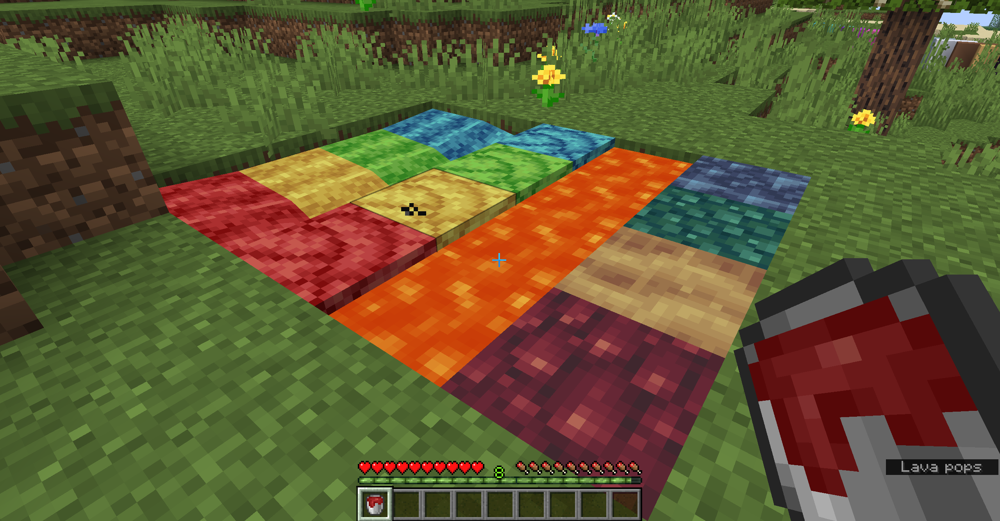
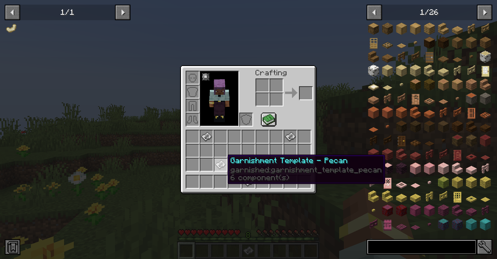
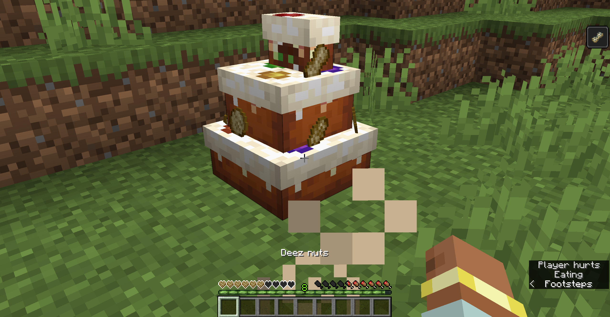
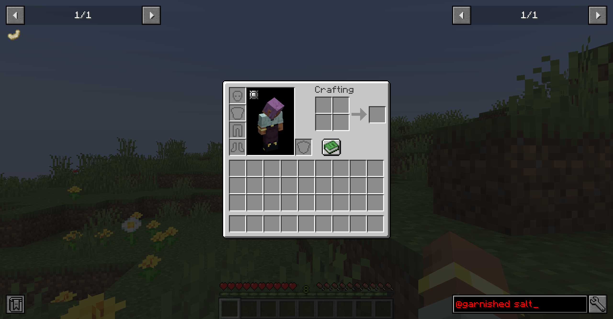
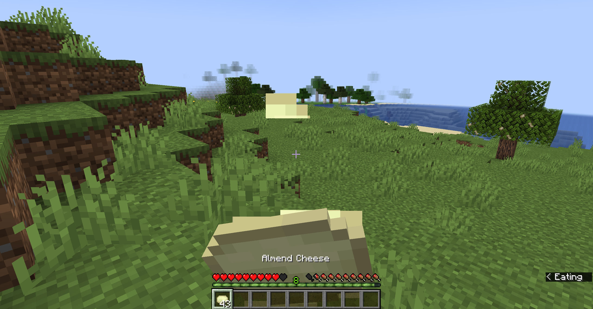
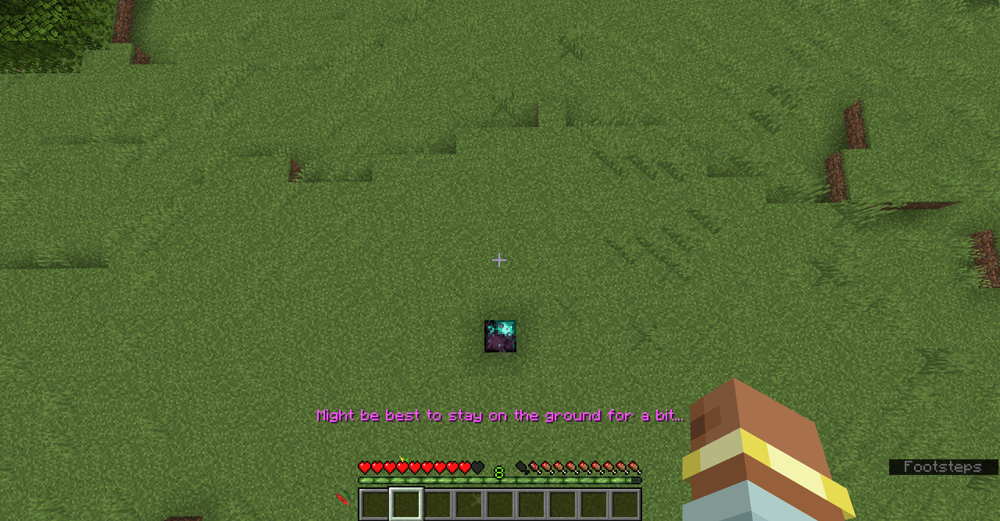
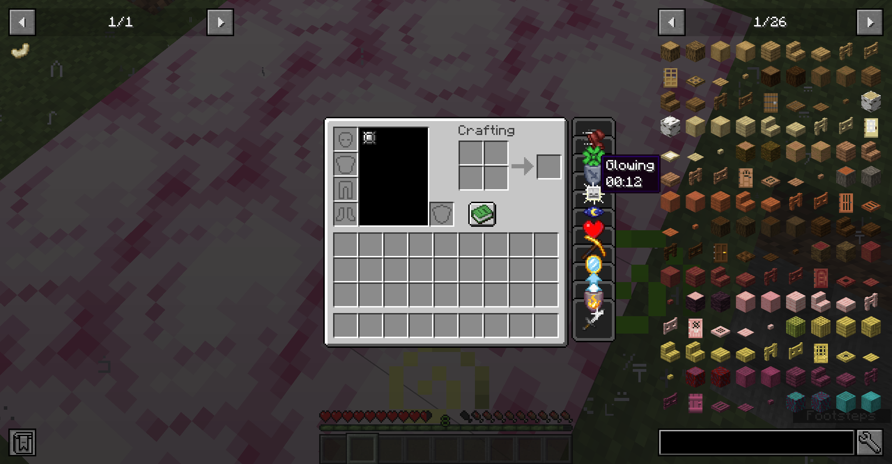
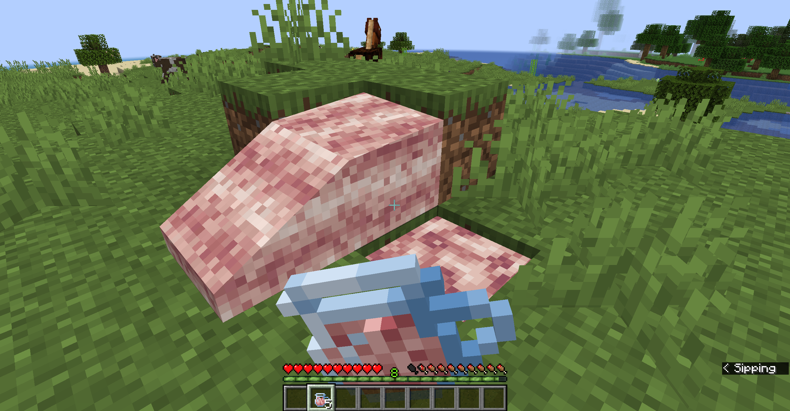
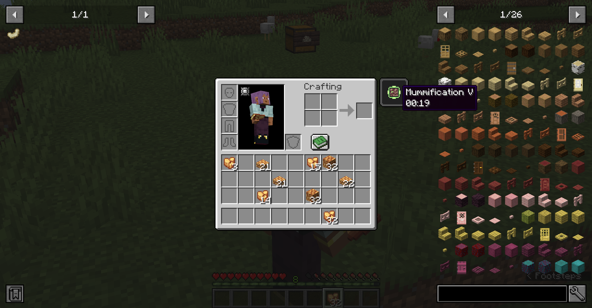
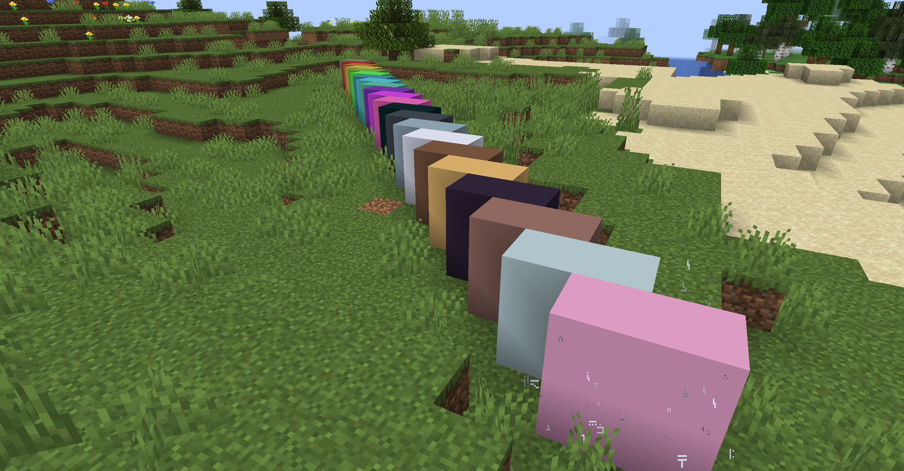

For the first time, Create: Garnished and a couple of other projects have received an update dedicated to joke content. For everyone who played around with these joke versions, hope you had fun discovering the weird and quirky features added or adjusted for the update!
Here is a culmination of all of the stuff from Create: Garnished's April Foods '26 update!
Some of you might remember back before the overhaul to Liquefied Mastic Resin that you could automate Crimsite, Viridium, Ochrum, and Asurine utilising the matching liquid that corresponded to the colour of the stone. Of course, as many of us have become familiar with, this is no longer the case and was replaced with fluid interactions producing Zultanite stone variants.
Well, now the legacy generation has returned in it's own way, where sources of Liquefied Mastic Resin of the correct colours - Red, green, yellow, and blue - can be turned into their respective stone blocks.
A very small minority of you may even remember Garnishment Templates - yes, back when I didn't understand how worldgen worked all that well. (damn, yeah that was a really long time) Well, while you can still find the Nut Trees, you can now create Garnishment Templates from sending an Iron Sheet through a Stonecutter or a Mechanical Saw. Deploying any kind of nut from Create: Garnished will produce a unique variation of this item that can then be deployed onto Dough to produce the ungarnished nut corresponding to the Garnishment Template utilised in the process.
As you'll likely have noticed in your playthrough of this update, eating anything nut related will now give you the Aversion status effect. While the status effect is not new in this update, it did receive major alterations, which I'll go over in a second. But for now, you may notice some messages appearing before you after consuming some of these foods, a full list of which can be found below.
I'm not going to list every food that can get one of these messages, but there is some logic applied to what message you get depending on the food that you consume.
The Aversion status effect itself - as mentioned before - has gotten overhauled specifically for this update. It now functions similar to the vanilla status effect - Poison - and damages entities repeatedly. However, this is done in a much more annoying fashion where each tick of damage has thorns knockback and the damage is dealt much faster. Perishing from this type of damage also has unique death messages, but I think are fair enough to mention here.
Who needs seasoning anyways? Pretty self-explanatory thing here, Salt has been removed from the mod and recipes requiring salt have been adjusted accordingly.
The moon is officially made out of cheese! Or, I guess more accurately, cheese is now made out of the moon! This is pretty much just an aesthetic change rather than proper functionality, but nonetheless, enjoy the pun. :3
Taking a page out of Create: Garnished Reworked's configurations, all kinds of hatchets will now knock entities a significant amount of blocks away from it's initial position. Upon attacking an entity, a loud metal sound will play - an anvil.
As it would appear, the house always wins and defeating entities while Ravaging or Salvaging is applied to your hatchet will result in additional guaranteed to the player as opposed to having to deal with chances and enchantment level.
Blocks made from Ethereal Compound will now provide the Yeeted- I mean, uhh... "Ethereality" status effect, which will make you jump over 1000 blocks into the air as opposed to just a regular jump. A little popup message will appear right above your hotbar warning you that you should remain planted on the ground, but let's be honest - you're either going to ignore said warning or are going to forget and inevitably jump regardless.
Typically when standing atop Wyvern Stone, you will slowly gain various positive status effects with 10 available effects that you can have at any given time. However, this update changes that to where you get all 10 effects applied simultaneously - have fun.
As suggested - as a joke - by Fordalels for Create: Garnished Reworked's halloween-themed update, (Evil) Peanut Oil- Wait, ahem, "evil peanut butter (its peanut butter but evil)"...
Well, for the purposes of the pre-rework version of the mod, it's oil! Any food/drink made utilising (Evil) Peanut Oil - Bottled (Evil) Peanut Oil, (Evil) Peanut Oil And Cinder Sandwich, etc. - will now provide the Vulnerability status effect upon consumption. Vulnerability halves your max health and greatly reduces your knockback resistance from all damage sources.
Sorry, looks like those items might have been a bit cursed and now you're suffering the consequences from the pharaoh themselves. If you hold Amber Remnant or Ritualistic Stone within your inventory, Mummification V will be applied which will greatly slow you down and pretty much make any damage you could deal null and void.
It's sometimes just that simple - retexture every smooth stone block from Create: Garnished to just be a singular colour, the smoothest that it can possibly be.